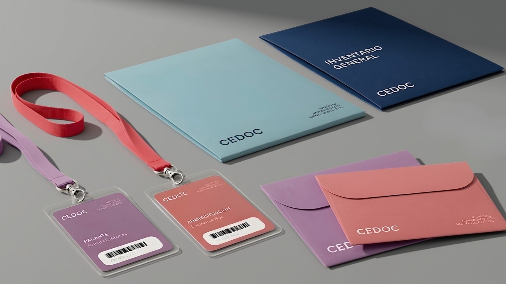

Centro de Documentación del MNBA
Identidad visual del Centro de Documentación del Museo Nacional de Bellas Artes.
- Año
- 2026
- Tipo
- Identidad visual
- Para
- MNBA
- Mi rol
- [Rol o contexto]

Contexto
[Quién es el Centro de Documentación, qué guarda y qué pasaba antes del proyecto.]
Problema
“[¿Qué problema o pregunta dio inicio al proyecto?]”
Objetivos
[Objetivo 1]
[Objetivo 2]
[Objetivo 3]
Bitácora
[Foto de la libreta o primeras notas]
Escuchar
[Qué aprendiste en la primera conversación]
[Mapa, referentes o moodboard]
Ordenar
[Cómo ordenaste la información]
[Bocetos o versiones descartadas]
Bocetar
[Qué probaste antes de decidir]
Aquí la idea toma forma.
Decisiones
Color
[Por qué esta paleta]
Tipografía
[Qué tipografía y qué transmite]
Sistema
[Cómo se aplica en credenciales, carpetas y sobres]
Resultado
[Detalle: credenciales]
[Detalle: Inventario general]
Lo que quedó
[Qué cambió para el archivo o qué aprendiste.]